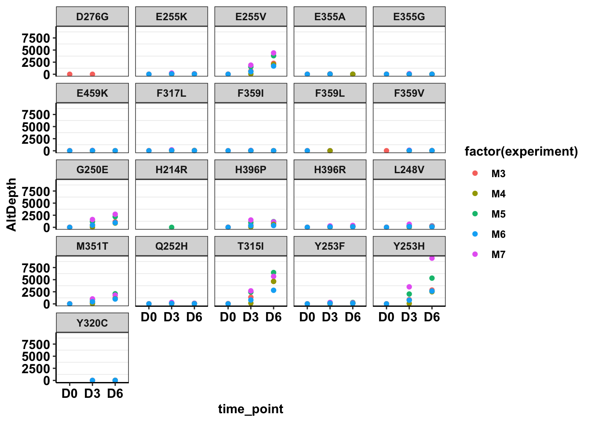

Last updated: 2020-04-20
Checks: 7 0
Knit directory: duplex_sequencing_screen/
This reproducible R Markdown analysis was created with workflowr (version 1.6.0). The Checks tab describes the reproducibility checks that were applied when the results were created. The Past versions tab lists the development history.
Great! Since the R Markdown file has been committed to the Git repository, you know the exact version of the code that produced these results.
Great job! The global environment was empty. Objects defined in the global environment can affect the analysis in your R Markdown file in unknown ways. For reproduciblity it’s best to always run the code in an empty environment.
The command set.seed(20200402) was run prior to running the code in the R Markdown file. Setting a seed ensures that any results that rely on randomness, e.g. subsampling or permutations, are reproducible.
Great job! Recording the operating system, R version, and package versions is critical for reproducibility.
Nice! There were no cached chunks for this analysis, so you can be confident that you successfully produced the results during this run.
Great job! Using relative paths to the files within your workflowr project makes it easier to run your code on other machines.
Great! You are using Git for version control. Tracking code development and connecting the code version to the results is critical for reproducibility. The version displayed above was the version of the Git repository at the time these results were generated.
Note that you need to be careful to ensure that all relevant files for the analysis have been committed to Git prior to generating the results (you can use wflow_publish or wflow_git_commit). workflowr only checks the R Markdown file, but you know if there are other scripts or data files that it depends on. Below is the status of the Git repository when the results were generated:
Ignored files:
Ignored: .Rhistory
Ignored: .Rproj.user/
Untracked files:
Untracked: analysis/grant_fig.pdf
Untracked: analysis/grant_fig_v2.pdf
Untracked: data/Combined_data_frame_IC_Mutprob_abundance.csv
Untracked: data/IC50HeatMap.csv
Untracked: data/Twinstrand/
Untracked: data/gfpenrichmentdata.csv
Untracked: data/heatmap_concat_data.csv
Untracked: grant_fig.pdf
Untracked: grant_fig_v2.pdf
Untracked: output/archive/
Untracked: output/ic50data_all_conc.csv
Untracked: shinyapp/
Unstaged changes:
Deleted: data/README.md
Modified: output/twinstrand_maf_merge.csv
Modified: output/twinstrand_simple_melt_merge.csv
Note that any generated files, e.g. HTML, png, CSS, etc., are not included in this status report because it is ok for generated content to have uncommitted changes.
These are the previous versions of the R Markdown and HTML files. If you’ve configured a remote Git repository (see ?wflow_git_remote), click on the hyperlinks in the table below to view them.
| File | Version | Author | Date | Message |
|---|---|---|---|---|
| Rmd | 2bba93e | haiderinam | 2020-04-20 | wflow_publish(“analysis/*.Rmd“) |
| html | c2930d5 | haiderinam | 2020-04-03 | Build site. |
| html | 6af2cdc | haiderinam | 2020-04-03 | Build site. |
| html | 0b9b87b | haiderinam | 2020-04-02 | Build site. |
| html | d6a53d9 | haiderinam | 2020-04-02 | Build site. |
| Rmd | 17e3ed5 | haiderinam | 2020-04-02 | wflow_publish(“analysis/growthrate_plots_ENU.rmd”) |
#Inputs:
conc_for_predictions=0.8
net_gr_wodrug=0.05
#Reading required tables
# twinstrand_maf_merge=read.csv("../output/twinstrand_maf_merge.csv",header = T,stringsAsFactors = F)
twinstrand_maf_merge=read.csv("output/twinstrand_maf_merge.csv",header = T,stringsAsFactors = F)
# twinstrand_simple_melt_merge=read.csv("../output/twinstrand_simple_melt_merge.csv",header = T,stringsAsFactors = F)
twinstrand_simple_melt_merge=read.csv("output/twinstrand_simple_melt_merge.csv",header = T,stringsAsFactors = F)Changes I’ve made so far: added annotations for the mutants that we didn’t otherwise see in the normal data. Added some annodations for the ENU experiment time point and spike in frequencies.
# ###In this section, all I'm doing is importing the twinstrand_maf_merge dataframe and annotating mutants. This is essentially copied over from the sections above but is present in the same chunks so that I don't have to go looking at chunks...
# twinstrand_maf=read.table("Twinstrand/prj00053-2019-12-02.deliverables/all.mut",sep="\t",header = T,stringsAsFactors = F)
# names=read.table("Twinstrand/prj00053-2019-12-02.deliverables/manifest.tsv",sep="\t",header = T,stringsAsFactors = F)
# twinstrand_maf_merge=merge(twinstrand_maf,names,by.x = "Sample",by.y = "TwinstrandId")
# ###These mutations include the mutations found in the normal data and ALSO mutants found only in the ENU data
# twinstrand_maf_merge=twinstrand_maf_merge%>%
# mutate(mutant=case_when(End==130872896 & ALT=="T" ~ "T315I",
# End==130862970 & ALT=="C" ~ "Y253H",
# End==130862977 & ALT=="T" ~ "E255V",
# End==130873004 & ALT=="C" ~ "M351T",
# End==130862962 & ALT=="A" ~ "G250E",
# End==130874969 & ALT=="C" ~ "H396P",
# End==130862955 & ALT=="G" ~ "L248V",
# End==130874969 & ALT=="G" ~ "H396R",
# End==130862971 & ALT=="T" ~ "Y253F",
# End==130862969 & ALT=="T" ~ "Q252H",
# End==130862976 & ALT=="A" ~ "E255K",
# End==130872901 & ALT=="C" ~ "F317L",
# End==130873027 & ALT=="C" ~ "F359L",
# End==130873027 & ALT=="G" ~ "F359V",
# End==130873027 & ALT=="A" ~ "F359I",
# End==130873016 & ALT=="G" ~ "E355G",
# End==130873016 & ALT=="C" ~ "E355A",
# End==130878519 & ALT=="A" ~ "E459K",
# End==130872911 & ALT=="G" ~ "Y320C",
# End==130872133 & ALT=="G" ~ "D276G",
# End==130862969 & ALT=="C" ~ "Q252H", ###The mutants below were found only in the ENU mutagenized pools
# End==130872885 & ALT=="G" ~ "F311L",
# End==130873028 & ALT=="G" ~ "F359C",
# End==130874971 & ALT=="C" ~ "A397P",
# End==130862854 & ALT=="G" ~ "H214R",
# End==130872146 & ALT=="C" ~ "V280syn",
# End==130872161 & ALT=="T" ~ "K285N",
# End==130872923 & ALT=="G" ~ "L324R",
# End==130872983 & ALT=="T" ~ "A344D"))
#
# twinstrand_maf_merge$totalcells=0
# twinstrand_maf_merge$totalcells[twinstrand_maf_merge$experiment=="M3"&twinstrand_maf_merge$time_point=="D0"]=493000
# twinstrand_maf_merge$totalcells[twinstrand_maf_merge$experiment=="M3"&twinstrand_maf_merge$time_point=="D3"]=1295000
# twinstrand_maf_merge$totalcells[twinstrand_maf_merge$experiment=="M3"&twinstrand_maf_merge$time_point=="D6"]=13600000
# ##########M5##########
# twinstrand_maf_merge$totalcells[twinstrand_maf_merge$experiment=="M5"&twinstrand_maf_merge$time_point=="D0"]=588000
# twinstrand_maf_merge$totalcells[twinstrand_maf_merge$experiment=="M5"&twinstrand_maf_merge$time_point=="D3"]=1299000
# twinstrand_maf_merge$totalcells[twinstrand_maf_merge$experiment=="M5"&twinstrand_maf_merge$time_point=="D6"]=11294000
# ##########M7##########
# twinstrand_maf_merge$totalcells[twinstrand_maf_merge$experiment=="M7"&twinstrand_maf_merge$time_point=="D0"]=611000
# twinstrand_maf_merge$totalcells[twinstrand_maf_merge$experiment=="M7"&twinstrand_maf_merge$time_point=="D3"]=857000
# twinstrand_maf_merge$totalcells[twinstrand_maf_merge$experiment=="M7"&twinstrand_maf_merge$time_point=="D6"]=14568000
# ##########M4##########
# twinstrand_maf_merge$totalcells[twinstrand_maf_merge$experiment=="M4"&twinstrand_maf_merge$time_point=="D0"]=405000
# twinstrand_maf_merge$totalcells[twinstrand_maf_merge$experiment=="M4"&twinstrand_maf_merge$time_point=="D3"]=980000
# twinstrand_maf_merge$totalcells[twinstrand_maf_merge$experiment=="M4"&twinstrand_maf_merge$time_point=="D6"]=1783000
# ##########M6##########
# twinstrand_maf_merge$totalcells[twinstrand_maf_merge$experiment=="M6"&twinstrand_maf_merge$time_point=="D0"]=510000
# twinstrand_maf_merge$totalcells[twinstrand_maf_merge$experiment=="M6"&twinstrand_maf_merge$time_point=="D3"]=798000
# twinstrand_maf_merge$totalcells[twinstrand_maf_merge$experiment=="M6"&twinstrand_maf_merge$time_point=="D6"]=842000
# ##########ENU3##########
# twinstrand_maf_merge$totalcells[twinstrand_maf_merge$experiment=="Enu_3"&twinstrand_maf_merge$time_point=="D0"]=166000
# twinstrand_maf_merge$totalcells[twinstrand_maf_merge$experiment=="Enu_3"&twinstrand_maf_merge$time_point=="D3"]=1282000
# twinstrand_maf_merge$totalcells[twinstrand_maf_merge$experiment=="Enu_3"&twinstrand_maf_merge$time_point=="D6"]=97200000
# ##########ENU4##########
# twinstrand_maf_merge$totalcells[twinstrand_maf_merge$experiment=="Enu_4"&twinstrand_maf_merge$time_point=="D0"]=316000
# twinstrand_maf_merge$totalcells[twinstrand_maf_merge$experiment=="Enu_4"&twinstrand_maf_merge$time_point=="D3"]=1264000
# twinstrand_maf_merge$totalcells[twinstrand_maf_merge$experiment=="Enu_4"&twinstrand_maf_merge$time_point=="D6"]=40000000
#
#
# # a=twinstrand_maf_merge%>%select(Annotation,CustomerName,experiment,REF,ALT,Depth,AltDepth,mutant,time_point)%>%filter(grepl("ENU",Annotation,ignore.case = T),time_point%in%c("D0","D3","D6"))%>%arrange(desc(AltDepth))
#
#
#
# #Adding columns for experiment names, experiment frequencies, and time
# twinstrand_maf_merge$experiment[twinstrand_maf_merge$CustomerName%in%c("M3D0","M3D3","M3D6")]="M3"
# twinstrand_maf_merge$experiment[twinstrand_maf_merge$CustomerName%in%c("M4D0","M4D3","M4D6")]="M4"
# twinstrand_maf_merge$experiment[twinstrand_maf_merge$CustomerName%in%c("M5D0","M5D3","M5D6")]="M5"
# twinstrand_maf_merge$experiment[twinstrand_maf_merge$CustomerName%in%c("M6D0","M6D3","M6D6")]="M6"
# twinstrand_maf_merge$experiment[twinstrand_maf_merge$CustomerName%in%c("M7D0","M7D3","M7D6")]="M7"
# twinstrand_maf_merge$experiment[twinstrand_maf_merge$CustomerName%in%c("Enu3_D3","Enu3_D6")]="Enu_3"
# twinstrand_maf_merge$experiment[twinstrand_maf_merge$CustomerName%in%c("Enu4_D0","Enu4_D3","Enu4_D6")]="Enu_4" ##Updated this line for ENU
#
# twinstrand_maf_merge$Spike_in_freq[twinstrand_maf_merge$CustomerName%in%c("M3D0","M3D3","M3D6")]=1000
# twinstrand_maf_merge$Spike_in_freq[twinstrand_maf_merge$CustomerName%in%c("M4D0","M4D3","M4D6")]=5000
# twinstrand_maf_merge$Spike_in_freq[twinstrand_maf_merge$CustomerName%in%c("M5D0","M5D3","M5D6")]=1000
# twinstrand_maf_merge$Spike_in_freq[twinstrand_maf_merge$CustomerName%in%c("M6D0","M6D3","M6D6")]=5000
# twinstrand_maf_merge$Spike_in_freq[twinstrand_maf_merge$CustomerName%in%c("M7D0","M7D3","M7D6")]=1000
# twinstrand_maf_merge$Spike_in_freq[twinstrand_maf_merge$CustomerName%in%c("Enu3_D3","Enu3_D6")]=1000
# twinstrand_maf_merge$Spike_in_freq[twinstrand_maf_merge$CustomerName%in%c("Enu4_D0","Enu4_D3","Enu4_D6")]=1000 ##Updated this line for ENU
#
# twinstrand_maf_merge$time_point[twinstrand_maf_merge$CustomerName%in%c("M3D0","M6D0","Enu4_D0")]="D0"
# twinstrand_maf_merge$time_point[twinstrand_maf_merge$CustomerName%in%c("M3D3","M4D3","M5D3","M6D3","M7D3","Enu3_D3","Enu4_D3")]="D3"
# twinstrand_maf_merge$time_point[twinstrand_maf_merge$CustomerName%in%c("M3D6","M4D6","M5D6","M6D6","M7D6","Enu3_D6","Enu4_D6")]="D6"
#
#
# twinstrand_maf_merge=twinstrand_maf_merge%>%mutate(totalmutant=AltDepth/Depth*totalcells)
ggplot(twinstrand_maf_merge%>%filter(!mutant=="NA",!experiment%in%c("Enu_3","Enu_4")),aes(x=time_point,y=AltDepth,color=factor(experiment)))+geom_point()+facet_wrap(~mutant)+cleanup
| Version | Author | Date |
|---|---|---|
| d6a53d9 | haiderinam | 2020-04-02 |
#!!!
a=twinstrand_maf_merge%>%dplyr::select(Annotation,CustomerName,experiment,REF,ALT,Depth,AltDepth,mutant)%>%filter(grepl("ENU",Annotation,ignore.case = T),grepl("D0",Annotation,ignore.case = T),experiment=="Enu_4")%>%arrange(desc(AltDepth))
# ggplot(a,aes(x=mutant,y=))#!!!!!!!!Continuefromhere!
# b=twinstrand_maf_merge%>%select(Annotation,CustomerName,experiment,REF,ALT,Depth,AltDepth,mutant)%>%filter(grepl("M6D0",CustomerName,ignore.case = T))%>%arrange(desc(AltDepth))
plotly=ggplot(twinstrand_maf_merge%>%filter(grepl("ENU",Annotation,ignore.case = T),experiment=="Enu_4"),aes(x=time_point,y=AltDepth,color=factor(experiment)))+geom_point()+facet_wrap(~mutant)+cleanup
ggplotly(plotly)sum(a$AltDepth)-20134 ###reads that were resistant clones.[1] 2543 plotly=ggplot(twinstrand_maf_merge%>%filter(grepl("ENU",Annotation,ignore.case = T),experiment=="Enu_3"),aes(x=time_point,y=AltDepth,color=factor(experiment)))+geom_point()+facet_wrap(~mutant)+cleanup
ggplotly(plotly)###The main thing I'm realizing from the ENU data is that the more frequent mutants DEFINITELY start to dominate during the latter days. Most resistant mutants have a lower depth of coverage later into the days. Only the mutants of highest resistance like T315I and G250E actually have an increase in MAF.
a=twinstrand_maf_merge%>%filter(tki_resistant_mutation=="True",!mutant=="NA",Spike_in_freq==1000,experiment%in%c("Enu_3","Enu_4"))
plotly=ggplot(twinstrand_maf_merge%>%filter(tki_resistant_mutation=="True",!mutant=="NA",Spike_in_freq==1000,experiment%in%c("Enu_3","Enu_4")),aes(x=time_point,y=totalmutant,color=factor(experiment)))+geom_point()+facet_wrap(~mutant)+scale_y_continuous(trans = "log10")+cleanup
ggplotly(plotly)Generating mean growth rate across mutants to see if that improves clinical abundance predictions. Short answer: no it doesn’t based on our current specs
a=twinstrand_simple_melt_merge%>%
mutate(netgr_obs=case_when(experiment=="M5"~netgr_obs+.015,
experiment%in%c("M3","M6","M5","M4","M7")~netgr_obs))
a_new=a%>%filter(experiment%in%c("M3"),duration%in%("d3d6"))
a_new=a_new%>%filter(!netgr_obs%in%NA)%>%
dplyr::select(mutant,netgr_obs)
# mean_netgr=twinstrand_simple_melt_merge%>%group_by(mutant)%>%summarize(netgr_pred=mean(netgr_obs,na.rm=T))
# a_new=mean_netgr
mean_netgr=twinstrand_simple_melt_merge%>%group_by(mutant)%>%summarize(netgr_mean=mean(netgr_obs,na.rm=T))
a_new=mean_netgrChecking if ENU mutants follow expected IC50s
enu_plots=twinstrand_simple_melt_merge%>%filter(experiment%in%c("Enu_4","Enu_3"),duration%in%"d3d6")
#hardcoding adjustments to the growth rates
enu_plots$netgr_obs[enu_plots$experiment=="Enu_3"]=enu_plots$netgr_obs[enu_plots$experiment=="Enu_3"]-.011
plotly=ggplot(enu_plots,aes(x=netgr_pred,y=netgr_obs,label=mutant))+geom_text()+facet_wrap(~experiment)+geom_abline()+cleanup
ggplotly(plotly)plotly=ggplot(enu_plots,aes(x=netgr_pred,y=netgr_obs,label=mutant,fill=factor(experiment)))+geom_text()+geom_abline()+cleanup
ggplotly(plotly)
sessionInfo()R version 3.5.2 (2018-12-20)
Platform: x86_64-apple-darwin15.6.0 (64-bit)
Running under: macOS 10.15.4
Matrix products: default
BLAS: /Library/Frameworks/R.framework/Versions/3.5/Resources/lib/libRblas.0.dylib
LAPACK: /Library/Frameworks/R.framework/Versions/3.5/Resources/lib/libRlapack.dylib
locale:
[1] en_US.UTF-8/en_US.UTF-8/en_US.UTF-8/C/en_US.UTF-8/en_US.UTF-8
attached base packages:
[1] parallel grid stats graphics grDevices utils datasets
[8] methods base
other attached packages:
[1] drc_3.0-1 MASS_7.3-51.5 BiocManager_1.30.10
[4] plotly_4.9.1 ggsignif_0.6.0 devtools_2.2.1
[7] usethis_1.5.1 RColorBrewer_1.1-2 reshape2_1.4.3
[10] ggplot2_3.2.1 doParallel_1.0.15 iterators_1.0.12
[13] foreach_1.4.7 dplyr_0.8.4 VennDiagram_1.6.20
[16] futile.logger_1.4.3 tictoc_1.0 knitr_1.27
[19] workflowr_1.6.0
loaded via a namespace (and not attached):
[1] fs_1.3.1 httr_1.4.1 rprojroot_1.3-2
[4] tools_3.5.2 backports_1.1.5 R6_2.4.1
[7] lazyeval_0.2.2 colorspace_1.4-1 withr_2.1.2
[10] tidyselect_1.0.0 prettyunits_1.1.1 processx_3.4.1
[13] curl_4.3 compiler_3.5.2 git2r_0.26.1
[16] cli_2.0.1 formatR_1.7 sandwich_2.5-1
[19] desc_1.2.0 labeling_0.3 scales_1.1.0
[22] mvtnorm_1.0-12 callr_3.4.1 stringr_1.4.0
[25] digest_0.6.23 foreign_0.8-75 rmarkdown_2.1
[28] rio_0.5.16 pkgconfig_2.0.3 htmltools_0.4.0
[31] sessioninfo_1.1.1 plotrix_3.7-7 fastmap_1.0.1
[34] htmlwidgets_1.5.1 rlang_0.4.4 readxl_1.3.1
[37] shiny_1.4.0 farver_2.0.3 zoo_1.8-7
[40] jsonlite_1.6 crosstalk_1.0.0 gtools_3.8.1
[43] zip_2.0.4 car_3.0-6 magrittr_1.5
[46] Matrix_1.2-18 Rcpp_1.0.3 munsell_0.5.0
[49] fansi_0.4.1 abind_1.4-5 lifecycle_0.1.0
[52] multcomp_1.4-12 stringi_1.4.5 whisker_0.4
[55] yaml_2.2.1 carData_3.0-3 pkgbuild_1.0.6
[58] plyr_1.8.5 promises_1.1.0 forcats_0.4.0
[61] crayon_1.3.4 lattice_0.20-38 splines_3.5.2
[64] haven_2.2.0 hms_0.5.3 ps_1.3.0
[67] pillar_1.4.3 codetools_0.2-16 pkgload_1.0.2
[70] futile.options_1.0.1 glue_1.3.1 evaluate_0.14
[73] lambda.r_1.2.4 data.table_1.12.8 remotes_2.1.0
[76] vctrs_0.2.2 httpuv_1.5.2 testthat_2.3.1
[79] cellranger_1.1.0 gtable_0.3.0 purrr_0.3.3
[82] tidyr_1.0.2 assertthat_0.2.1 xfun_0.12
[85] openxlsx_4.1.4 mime_0.8 xtable_1.8-4
[88] later_1.0.0 survival_3.1-8 viridisLite_0.3.0
[91] tibble_2.1.3 memoise_1.1.0 TH.data_1.0-10
[94] ellipsis_0.3.0